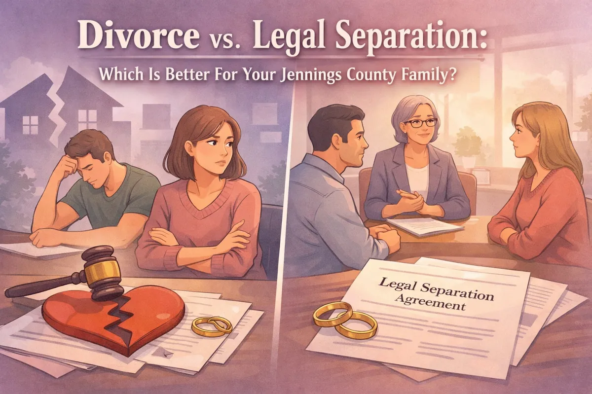
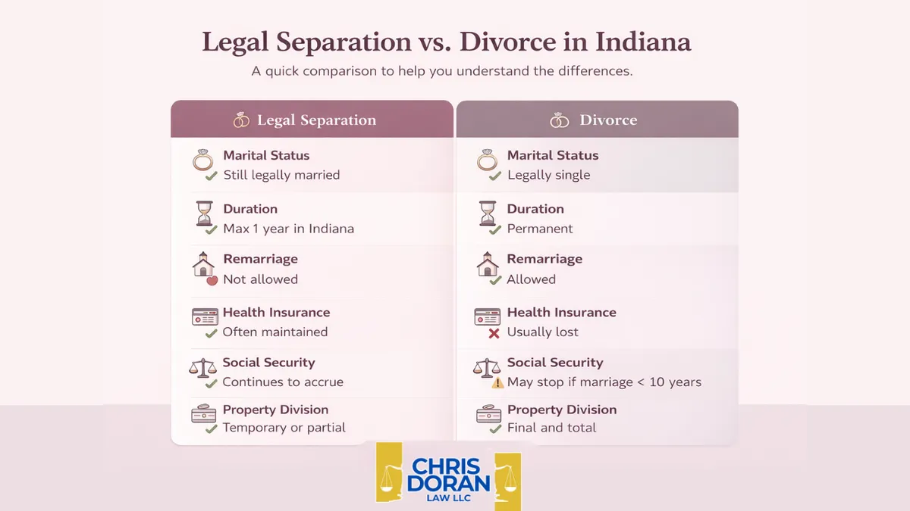

Divorce vs. Legal Separation: Which Is Better For Your Jennings County Family?

When you are sitting at your kitchen table in North Vernon or Hayden, trying to figure out the next steps for your marriage, the weight of the world can feel like it's resting right on your shoulders. Decisions about the future of your family are never easy. Whether you are living in Scipio or Commiskey, the legal hurdles of "what comes next" can feel overwhelming.
One of the many questions I get as a lawyer in Jennings County is: "Chris, should we get a divorce, or is legal separation a better idea?"
It's a fair question. Most people think these two things are basically the same, just with different names. But in Indiana, there are big differences that can affect your bank account, your insurance, and your peace of mind. At Chris Doran Law LLC, I believe in being a helpful neighbor first. I'm here to listen to what you have to say and give you practical options that fit your specific life.
Understanding the Basics: Divorce vs. Legal Separation
In Indiana, both divorce and legal separation involve the court system. You'll likely spend time thinking about the Jennings County Courthouse in Vernon, and you'll definitely need a plan for your kids and your property. However, the end result is very different.
Divorce (Dissolution of Marriage) is the final, legal end to a marriage. Once the judge signs that decree, you are no longer married. You are free to remarry, your assets are permanently divided, and your legal ties to your former spouse are mostly cut (except for things like co-parenting or child support).
Legal Separation is more like a "time-out" with legal teeth. It allows a couple to live apart and have the court decide on things like child support and who pays which bills, but you remain legally married. In Indiana, a legal separation can only last for a maximum of one year. After that year, you either have to reconcile or move forward with a divorce.

Why Choose Legal Separation?
Many families in our community choose legal separation because they aren't quite ready to close the door on the marriage forever. Maybe you need some space to breathe and see if things can be fixed, but you need a structured way to handle the bills and the kids in the meantime.
1. Health Insurance Benefits. This is a big one for folks in North Vernon. Often, one spouse is covered under the other's employer-sponsored health insurance plan. If you get a divorce, that coverage usually ends immediately. With a legal separation, because you are still legally married, the non-employee spouse can often stay on the insurance plan. This can be a lifesaver if someone has a chronic illness or needs time to find their own coverage.
2. Religious or Personal Beliefs. Sometimes, a full divorce doesn't align with your faith or personal values. Legal separation provides a way to live independently and have the protection of a court order without officially ending the marriage in the eyes of your church or community.
3. The "Cooling Off" Period. Marriage is hard. Sometimes, couples just need a year to step back. A legal separation allows you to figure out if distance makes the heart grow fonder or if it confirms that a divorce is the right move. I've seen many Jennings County families use this time to attend counseling and eventually reconcile.
Why Divorce Might Be the Right Move
While separation has its perks, it isn't always the best solution. If you know in your heart that the marriage is over, legal separation might just be dragging out the inevitable and costing you more money in the long run.
1. Finality and a Fresh Start. A divorce gives you a clean break. You can sell the house in Vernon, divide the retirement accounts, and move on with your life. You don't have to check back in with the court in a year. For many, this finality is the only way to truly begin the healing process.
2. The Ability to Remarry. You cannot get remarried while you are legally separated. If you've already moved on and are looking toward a future with someone else, divorce is the only path that allows you to legally start that new chapter.
3. Financial Independence. When you are legally separated, your finances can still be somewhat entangled. In a divorce, the court makes a "just and reasonable" division of everything you own and everything you owe. Once that's done, what you earn moving forward is yours, and you aren't responsible for any new debts your ex-spouse might run up.
The Role of Children in the Decision
Whether you choose divorce or legal separation, your kids come first. In Jennings County, the courts look at the "best interests of the child."
During a legal separation, the court can issue orders for:
Temporary custody
Parenting time schedules (who has the kids on weekends or after school)
Child support payments
These orders are vital because they provide stability. Kids do best when they know the plan. Whether you're navigating the schools in North Vernon or spending weekends at the park, having a clear legal structure helps keep the peace. As a lawyer in Jennings County who has handled a wide variety of complex legal matters, I make sure we focus on practical parenting plans that actually work for your daily life, not just something that looks good on paper.
Why You Need a Local Perspective
You might see big law firms from Indy or Louisville advertising online, but they don't always understand how things work here in North Vernon or Vernon. I'm a "small town lawyer" who wears many hats, and I'm proud of that. I've spent my career helping my neighbors navigate the local court system.
When you work with Chris Doran Law LLC, you aren't just a case number. I actually listen to your story. I want to know about your concerns: whether it's keeping the family farm near Scipio or making sure your kids stay in the same school district.
I also believe in transparency. Dealing with legal issues is stressful enough without wondering about hidden costs. I'm upfront about my fees, and I don't believe in nickel-and-diming my neighbors. For example, I'm honest about things like travel fees: if I have to travel for your case, we talk about it clearly so there are no surprises.
How to Decide: Ask Yourself These 3 Questions
If you are stuck between these two options, take a breath and think about these questions:
Do I see any chance of us getting back together in the next 12 months? If the answer is "maybe," legal separation gives you that window of time.
Does one of us rely heavily on the other for health insurance? If a divorce would leave one spouse without necessary medical care, separation might be a bridge to help them find a new plan.
Am I ready for a final financial split? If you want to buy a new home or invest money without it being considered "marital property," divorce is usually the safer bet.
Taking the Next Step in Jennings County
Deciding between divorce and legal separation is a personal choice, but you don't have to make it alone. As one of the experienced attorneys in North Vernon, Indiana, I've helped countless families through these exact transitions.
Whether you're in Hayden, Commiskey, or right in the heart of North Vernon, my goal is to provide a straightforward, no-nonsense approach to your legal needs. We'll sit down, look at your assets, talk about your kids, and figure out which path leads to the best future for you.
My office is located in the historic building that served as the very first Jennings County Courthouse from 1840 to 1859. There is a lot of history in these walls, and it reminds me every day that the work we do here: establishing justice and helping families: is what keeps our community strong.
If you're ready to talk, I'm ready to listen. You can learn more about me on my About Me page or check out our Jennings County Court 101 guide for more local tips.
Transitions are hard, but having the right information makes them a lot easier. Let's figure this out together.